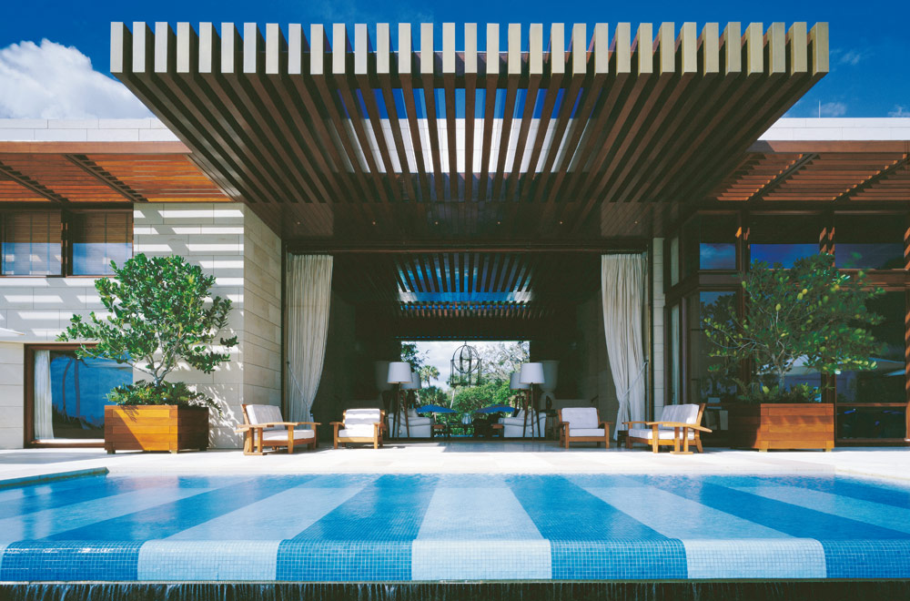
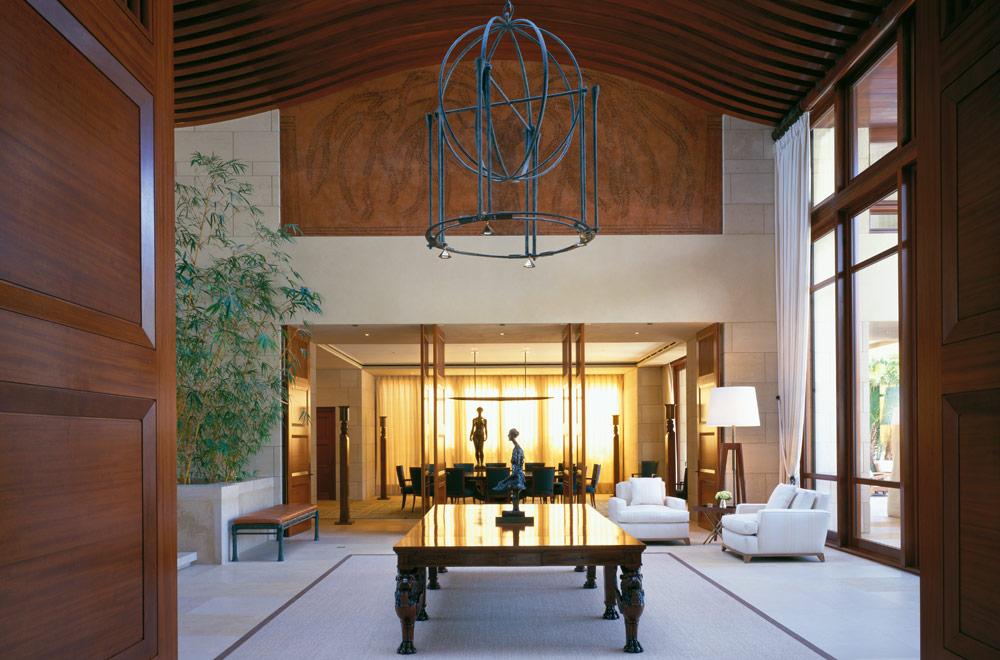
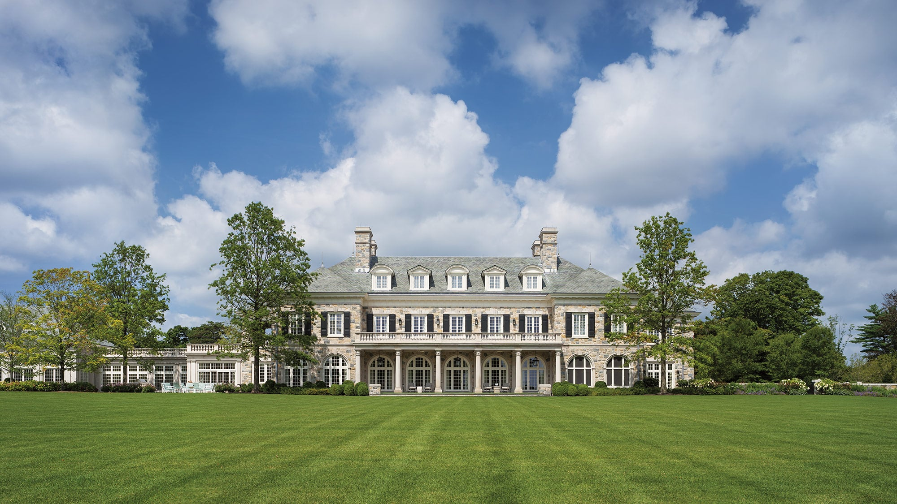

Ausgewählte Arbeiten.
In über vier Jahrzehnten realisiert mit international renommierten Architekten — Robert A. M. Stern, Frank O. Gehry, David Chipperfield, gmp, Hans Kollhoff, Tadao Ando u. v. m.
Über 2.200 Projekte weltweit
Vom Hamburger Villenviertel bis an die US-Küsten — KORN baut an jedem Ort der Welt.

1102USA
908Deutschland
39Russland
36England
34Frankreich
53Spanien
21Schweiz
12Spanische Inseln
5Monaco
17Karibische Inseln






Architekten & Orte
- Mark P. Finlay ArchitectsGreenwich, Connecticut · USA
- The Office of Thierry W. DespontPalm Beach, Florida · USA
- Tigerman McCurryPalm Beach, Florida · USA
- Ike Kligerman BarkleyNew York · USA
- Shope Reno WhartonLong Island, New York · USA
- Guido SilvestroniMontefano, Marken · Italien
- Werner SobekUlm · Deutschland
- Prof. Hans Kollhoff ArchitektenBerlin-Dahlem · Deutschland
- Tadao Ando ArchitectsVenedig · Italien
- Silvia Gmür Reto GmürTessin · Schweiz
- Randall Stofft ArchitectsCaptiva, Florida · USA
- JP Molyneux StudioMoskau · Russland
- nps tchoban vossBerlin · Deutschland
- Gabellini SheppardHamburg · Deutschland
- Dorenbach ArchitektenArlesheim · Schweiz
- Prof. Cäsar PinnauHamburg · Deutschland
- Stofft Cooney ArchitectsNaples, Florida · USA
- Michel ChombartBahamas-Archipel
- Jan WichersHamburg · Deutschland
- Zech ArchitekturSt. Margrethen · Schweiz